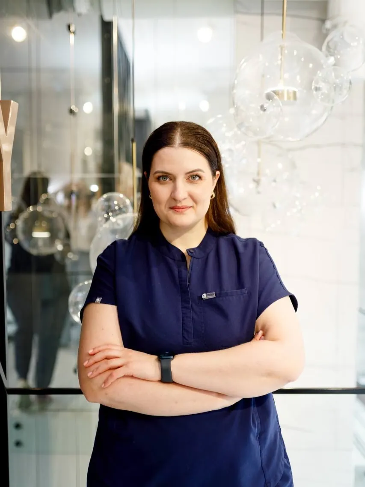
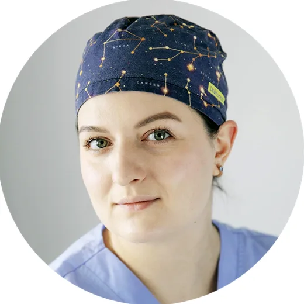
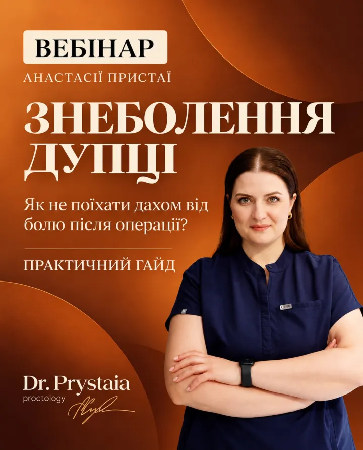

Я — Анастасія Пристая, лікар-хірург і колопроктолог. Мені важливо, щоб ви знали наперед, що з вами відбуватиметься: страх живе там, де невідомість. Тому тут я розповідаю все — від першої бесіди до виходу з кабінету.
Ви приходите — ми сідаємо й говоримо. Консультація проходить без медсестри: ми з вами вдвох. (У «Феофанії» може бути присутній інтерн чи практикант — так ми вчимо наступне покоління проктологів.)
Поки що ніхто нікого не оглядає.
02
Шортики для огляду
Для огляду я видаю оглядові шортики, тож ви не залишаєтесь без одягу.
Так, це не вечірній дрес-код.
03
Огляд — лише після бесіди
Огляд починається тоді, коли ми все обговорили і вам зрозуміло, що буде далі.
Жодного «давайте швиденько, поки ви не встигли злякатись».
04
Про кожен рух — заздалегідь
Зненацька нічого не робиться. Про кожен свій рух я повідомляю наперед.
Сюрпризи — на день народження, а не в кабінеті.
05
Максимально комфортно
Я роблю все, щоб огляд був комфортним. Це звичайна медична процедура, а не покарання.
Дупця — такий самий орган, як і всі інші.
06
Швидко — і зрозуміло
Огляд проводиться швидко — налякатись не встигнете. Після нього ми знову розмовляємо: якщо потрібне втручання, я одразу пояснюю все популярно — тільки те, що стосується саме вашої проблеми.
Будь-яку проблему легше, дешевше і приємніше попередити, ніж лікувати!
Здуття живота, закрепи й подібне — це до гастроентеролога, а не до мене.
Це моє?
Три короткі запитання, щоб зрозуміти, з чого почати. Нічого не зберігається й нікуди не надсилається.
Чотири страхи, які ми розберемо
Торкніться картки, щоб перевернути.
Як підготуватись до візиту
Відмічайте пункти — і ви готові. Жодних дієт і голодування.
Готово: 0 з 5
Коли готуватись не потрібно
Ситуація ургентна. Але тоді пацієнт приїздить каретою швидкої, а не читає цей текст.
Консультація післяопераційна. Такий огляд переслідує зовсім інші цілі.
Консультація повторна, і я сказала, що до неї готуватись не потрібно.
А якщо не підготувались?
Я нікуди не дінусь — проконсультую. Але є певна ймовірність, що щось пропущу, і якість такого огляду помітно падає. Тому краще встигнути.


Просто Анастасія, дякую
Мене звати Анастасія Володимирівна Пристая, і я не люблю, коли мене називають «Настя» (хіба що близькі друзі). Я лікар-хірург, колопроктолог; друга моя спеціалізація — онкохірургія.
Я лікую хірургічні хвороби товстої кишки, анального каналу та періанальної ділянки. Моя місія — довести, що проктологія не соромна, а важлива, а огляд у проктолога — не покарання, а процедура, яку можна зробити комфортною.
11років у хірургії. Оперую сама, а не кличу «дорослих».
300+втручань на рік: промежинних і черевної порожнини (за моїми даними 2023 року).
ДеКлінічна лікарня «Феофанія» ДУС (Київ): тут оперую. Консультую також у The Beauty clinic; очний запис — в OLYMED.
ЩеДиректорка з питань міжнародного партнерства та зв'язків із громадськістю в GMKA; частина команди @sviy.doc.
Освіта[ОСВІТА І ПІДВИЩЕННЯ КВАЛІФІКАЦІЇ: уточнити]
Не призначаю непотрібних операцій і бездоказових препаратів
Категорично. Принципово.
Не оперую без особистого огляду
Операція — велика відповідальність, і я беру її лише свідомо.
Не роблю лазером «бо красиво описано в інтернеті»
Лазер — лише коли є залізні показання.
Не телефоную страховим під час прийому
Після візиту на рецепції видадуть акт виконаних робіт — подасте на відшкодування самостійно.
Послуги й вартість
Консультації та додаткові процедури
Послуга
Вартість
Очна консультаціяOLYMED, Київ
[ЦІНА: уточнити]
Онлайн-бесідаТекстом у Telegram, до 30 хв. Освітній формат.
1500 грн
Забір ПАП-тесту та ВПЛ
~2000 грн
Латексне лігування
3500 грн
Плазмотерапія
3500 грн
Видалення бахромок та невеликих утворень періанальної ділянки
3500 грн
Ін'єкції ботоксу при анальних тріщинах, гіпертонусі м'язів тазового днаВартість залежить від кількості препарату.
3000–15000 грн
ОпераціїОперую в клініці «Феофанія». Запис — після консультації (очної чи онлайн).
Після консультації
Ціни орієнтовні (за інформацією лікарки, листопад 2026). Остаточну вартість підтверджує адміністратор клініки. Обсяг і метод лікування визначає лікар під час консультації.
Якщо хочеться розібратись глибше

Вебінар
Знеболення дупці
Як не поїхати дахом від болю після операції? Практичний гайд.
Про що
як знеболитись і які ліки приймати;
як ходити в туалет і підмиватись;
як доглядати за ранками;
що можна їсти й які обмеження;
коли можна починати спроби завагітніти;
на що звертати увагу, чого «боятись», що нормально після операції і коли зберігати спокій.
Для кого
кому потрібна операція, але страшно через невідомість «а що потім?»;
в кого заплановане втручання і хочеться підготуватись;
хто вже прооперувався, але чомусь не має нормальної комунікації зі своїм хірургом.
Підготує до реабілітації після видалення геморою (будь-яким методом), анальної тріщини, поліпів та інших доброякісних утворень, операцій з приводу нориць. Загалом допоможе зорієнтуватись після будь-якої операції в ділянці анального каналу.
Вартість
1000 грн
Доступ
6 місяців (обов'язкова пошта gmail)
Бонус
цей вебінар + вебінар «Геморой» або «Анальна тріщина» — 2000 грн замість 2600 грн
ВідеоЯк правильно ходити в туалет? Відверта розмова з проктологом«Між Нами Лікарями»ПодкастПро хірургію, великі гроші, три роботи, приватну медицину та принципи«Заплати собі сама» з Оксаною ЖелезкоInstagram
Говорю так само, як тут
Сторіс, хайлайти («Псиліум», «Мамське», «Пологова травма»), Reels. Мене читають 78,3 тис. людей.
Я консультую жінок і чоловіків від 18 до 300 років, будь-якої сексуальної орієнтації та віросповідання. Толерантність 100%.
Чи лікую я дітей?
Ні, і не тому що не хочу: я просто не маю на це права — моя освіта цього не дозволяє. З дітьми — до педіатрів та дитячих хірургів.
Чи лікую я вагітних?
Запрошую. Вагітність — не привід терпіти дискомфорт.
Чи лікую я жінок на грудному вигодовуванні?
Так, навіть оперую. Для жінок на ГВ доступне практично все — без динозаврячих традицій.
Чи оперую я сама?
Так. Якщо я кажу, що треба оперувати, то я маю на увазі, що я це зроблю, а не покличу «дорослих». У хірургії я 11 років.
Чи виконую я операції лазером?
Так! Але для кожного методу операції потрібні залізні показання. Робити лазерну вапоризацію чи операцію Лонго тільки тому, що пацієнту сподобався опис в інтернеті, я не буду.
Як проходять операції?
Усе обговорюється на консультації. Якщо після огляду та бесіди я рекомендую втручання, одразу все популярно пояснюю — тільки ту інформацію, що стосується саме вашої проблеми. Це буде достовірно, потрібно і цікаво. Підготовку до операції та всі дрібні моменти (не складні у виконанні) видаю у вигляді текстового документа.
Чи можна в мене прооперуватись без консультації, якщо інший проктолог рекомендував втручання?
Ні. При всій повазі — я оперую лише після особистого огляду. Я не вважаю себе найрозумнішою, але операція — це велика відповідальність. І я її беру на себе тільки свідомо.
Дуууууже боюсь консультації. Що робити?
Для того, щоб було спокійніше, повідомляю:
Консультація проводиться без медсестри (у «Феофанії» може бути присутній інтерн або практикант — це чудово, бо ми навчаємо наступне покоління проктологів. Повірте, це в ваших інтересах).
Видаються оглядові шортики, тож пацієнт не голий.
Огляд починається після бесіди.
Зненацька нічого не робиться, про кожен рух повідомляю заздалегідь.
Я роблю все, щоб огляд був максимально комфортним.
Огляд проводиться швидко — налякатись не встигнете.
Чи можна до мене звертатись з приводу раку товстої кишки?
Навіть треба. Маю другу спеціальність — онкохірургію — і чудову команду онкологів. Виконуємо операції лапароскопічно (коли пузіко не розрізається, а робляться маленькі проколи).
Чи виконую я колоноскопію?
Колоноскопія — це неймовірно класне проктологічне дослідження, яке виконують ендоскопісти. І хай займаються! Щоб робити це добре, потрібно робити це нон-стоп. А я знаю крутеньких спеців і за необхідності направлю.
Це освітній формат, а не повноцінна консультація: точний діагноз без огляду неможливий. Прочитати правила. Прямий Telegram-лінк: [TELEGRAM: уточнити]
Немає вільного місця? Лист очікування
Я розумію, що записатись важко: черга велика. Але понад 6 днів на тиждень фізично працювати не можу. Тому є лист очікування: адміністратор запише ваші дані й передзвонить, щойно звільниться місце або відкриється новий консультативний день.
Прооперовані пацієнти приходять безкоштовно і без черги. Дякую, що чекаєте!
Я іноді хворію — і тоді консультація може відмінитись. Але я обов'язково виділю додатковий день, щоб вам допомогти.